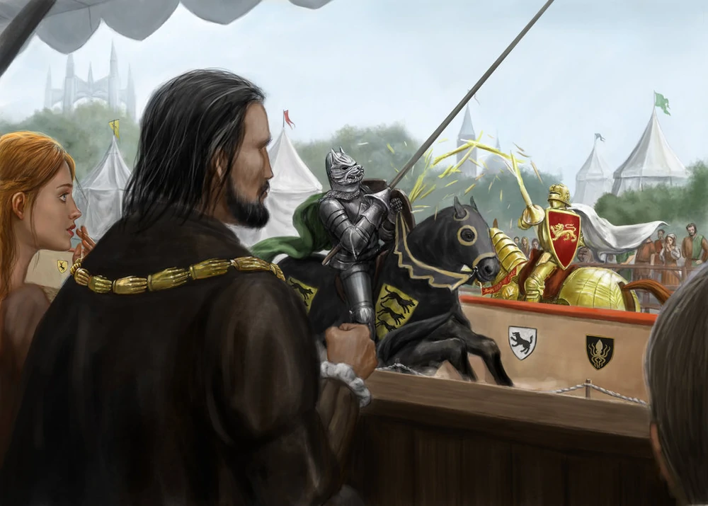
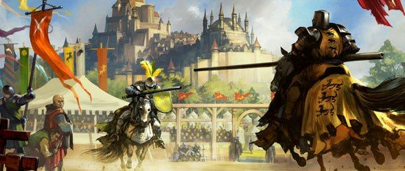

Torneos
Los torneos son eventos de competiciones de caballería celebrados en los Siete Reinos, siendo la primera diversión de la corte y ciudades populosas. Los espectáculos celebrados son frecuentemente a causa de coronaciones, matrimonios de reyes, nacimientos, bodas de príncipes, conquistas, alianzas, recibimiento de embajadores y personas de gran valía. Para los señores que sirven de anfitriones de estos eventos significan un gran prestigio y una forma de demostrar su riqueza. Para los caballeros, los resultados de los torneos son una parte importante de su historia personal, dándoles notoriedad o permitiéndoles conseguir la mano de una dama.

Formato y reglas
El acontecimiento central de la mayoría de los torneos son las justas, donde dos caballeros armados apuntan a derribarse de sus monturas con una lanza de justas, continuando a pie con una variedad de armas.Sin embargo, existen muchas otras competencias, incluyendo los simulacros de batallas entre los equipos de caballeros, competiciones de tiro con arco o tumultos, donde muchos guerreros luchan individualmente en una gran batalla. Muchos torneos son grandes eventos de varios días y pueden incluir varias competiciones diferentes.
Normalmente se hacen rondas de eliminatorias, donde el ganador escala puestos y el perdedor queda eliminado de la competición. El ganador de la última ronda es declarado campeón del torneo. Esto es similar a la cantidad de torneos que en la vida real se llevaron a cabo, con la excepción de la regla del mejor de tres. Otro popular formato se utilizó en Vado Ceniza; este tipo de torneo comienza con cinco campeones que defienden el honor de una mujer, a menudo una hija del Señor que organiza el torneo.
Otros participantes pueden desafiar a uno de los campeones a una justa y, si tiene éxito, ocupar su lugar. Al final del torneo, los cinco campeones que quedan confirman a la Reina del Amor y la Belleza original, o eligen una nueva. En muchos torneos, el perdedor de una justa pierde su caballo y armadura en favor del ganador, poniendo así en peligro una parte considerable de sus bienes.
Algunos torneos están abiertos sólo para caballeros ungidos, cuyos privilegios son custodiados celosamente. La cultura de los torneos está estrechamente conectada con la tradición caballeresca y su base espiritual, la Fe de los Siete. Estas tradiciones dominan el sur y el centro de los Siete Reinos, y son menos comunes en el Norte, donde muchos adoran a los Antiguos Dioses. Sin embargo, las reglas para entrar en los torneos varían con el tiempo y el lugar, existiendo muchos eventos donde jinetes libres, escuderos o seguidores de los Antiguos Dioses han entrado en las lizas.

Tradicion del caballero misterioso
En varios torneos, se han visto caballeros negándose a revelar su identidad, portando una corona de color sólido, o empleando un blasón de fantasía. La principal motivación de los caballeros es competir a pesar de una discapacidad social (incluyendo una edad demasiado joven, ser de status muy elevado, estar fuera de la ley, etc). Otras veces lo hacen llamar la atención y ganarse el favor del público.
Para mayor información sobre estos y otros habitantes de este continente buscar en la wiki en español.